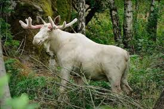

Luke Stockburger's Portfolio

My projects:
- Hello, World!
- Wiki Page
- Animal shelter
Our first project! Learning the basics!
Mimicking a Wikipedia page
A totally real animal shelter!
My hobbies
- Writing
- Reading
- Gardening
I was raised by two teachers, my parents Mike and Jean Stockburger, who instilled in me a deep love of reading and writing at a young age.
I love to read. Since the 2000's I've read a minimum of a book every two weeks to keep my mind and imagination sharp. It's a great regiment!
My mother was an avid gardener. In my homeland, Alaska, the soil is incredibly fertile. As a young kid, I would help her plant, till, and harvest. She would pay me a penny for every slug I destroyed! Muahaha!
My background:
- Writing
- Landscaping
- Commercial Fishing
During the course of my life I've written two novellas and several short stories. I've never been published... at least, not yet...
My love of gardening led me to inevitable, a sort of career in landscaping.
I grew up gill-netting on the Yukon river. Later, in my teenage years, fished commercially in Bristol Bay, located in southwest Alaska.
About Me:
You're probably wondering why I have a picture of albino mooses everywhere! At least, I hope so. You see, I was raised in native villages along the Yukon river in western Alaska, and being the only "Gussuc"(white boy). I was an easy target for malicious nicknames. Dzisk'w Dlèit was my first, as I was small, white and weak. Dzisk'w Dlèit translates roughly to "white moose" and is a malicious insult as not only are albino moose rare, but they suffer from afflictionss that make it even rarer for them to reach adulthood. They have compromised immune systems, a sensitivity to light and a complete lack of camoflage. "But Luke," You might ask, "Alaska is super snowy, right? Wouldn't they blend in with the snow?". You would be right! But considering that in summer Alaska is lush and verdant with vegetation, they are completely exposed in the summer months when predators run rampant, uninhibited by deep snow. Anyway, it was a nasty name and meant as an insult. But I learned to own it, and as I grew up I found I liked it. Anyhow, I moved here eight years ago to live in a warmer climate with more civilization, and I found it! Since then I've been working as a landscaper in the summer bartending and odd jobs in the off season. Then I discovered how awesome coding is, and now I'm here at Epicodus making web pages and writing to you. If you're interested in my other projects, you can find some links to the right! Thanks for reading!